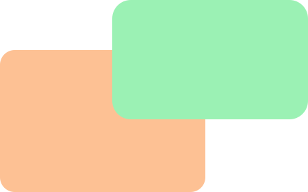
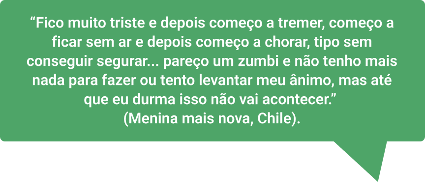
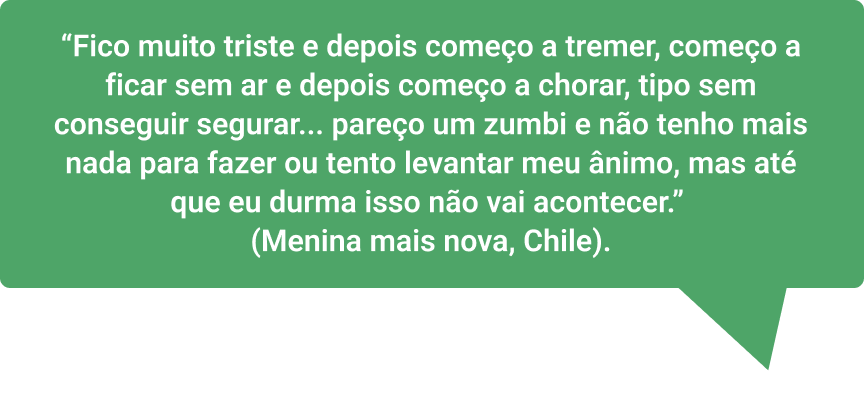
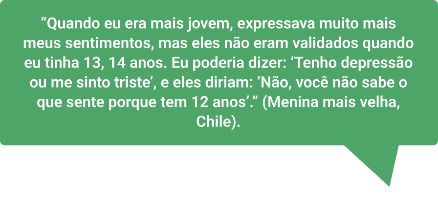
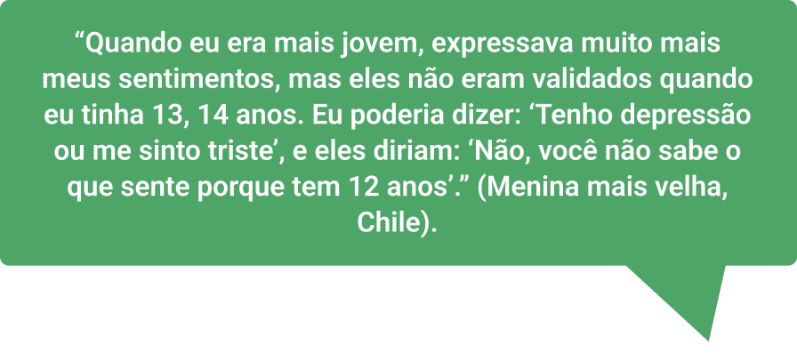

Sobre as autoras
Neidy Marcia de Souza Silva
Graduação em Serviço Social pela Universidade Federal do Rio de Janeiro (1985) e Mestrado em Serviço Social pela Universidade do Estado do Rio de Janeiro (2007). Assistente Social da Universidade do Estado do Rio de Janeiro e da Prefeitura da Cidade do Rio de Janeiro (aposentada), com ênfase de intervenção no campo da Saúde, Assistência Social e gestão em órgãos de controle social na área da criança e do adolescente, atuando principalmente no seguinte tema: Saúde do Adolescente. Atualmente, é Assistente Social do Núcleo de Estudos da Saúde do Adolescente, realizando atendimento com abordagem interdisciplinar e interinstitucional a adolescentes e famílias nas ações de atenção à saúde e participando em programas e projetos de garantia de direitos de adolescentes e jovens. Realiza preceptoria a alunos da faculdade de Serviço Social da UERJ e residentes do curso de Especialização Lato Sensu em Serviço Social e Saúde.
Helena Ferraz Gomes
Formada em Bacharelado e Licenciatura em Enfermagem pela Faculdade de Enfermagem da Universidade Federal de Juiz de Fora em 2009. Especialista em Saúde Coletiva, sob moldes de residência em enfermagem pela UNIRIO/UFF (2010-2012). Doutora e Mestre em Enfermagem pela Faculdade de Enfermagem da Universidade do Estado do Rio de Janeiro. Docente: Professora Adjunta da Faculdade de Enfermagem da Universidade do Estado do Rio de Janeiro - Departamento de Enfermagem Médico-Cirúrgica (DEMC) - Área Clínica. Atuação Teórico-Prática em Enfermagem Clínica com enfoque na Saúde do Adolescente. Experiência Profissional nas seguintes áreas: Enfermagem Clínica, Saúde do Adolescente e Saúde Coletiva. Realiza pesquisas nas seguintes áreas: Saúde do Trabalhador, Saúde do Adolescente e Terapia Infusional. Atua na Coordenação do Programa de Residência de Enfermagem em Saúde do Adolescente da Faculdade de Enfermagem da UERJ.
Anália da Silva Barbosa
Graduada em Serviço Social pela Universidade Federal Fluminense, Mestre em Serviço Social pelo Programa de Pós-Graduação em Serviço Social da Escola de Serviço Social da Universidade Federal do Rio de Janeiro (PPGSS/ESS/UFRJ) e Doutoranda do Programa de Políticas Públicas e Formação Humana da Universidade do Estado do Rio de Janeiro (PPFH/UERJ). Preceptora e Docente da Residência Multiprofissional em Saúde Mental da UERJ. Atualmente é Coordenadora do Centro de Atenção Psicossocial da UERJ e presta assessoria para Entidade Filantrópica do Terceiro Setor (Instituto Santa Lúcia) na área da política de assistência social, criança e adolescente e saúde mental.

Coordenação acadêmica - Eloísa Grossman
Graduação em Medicina pela Universidade do Estado do Rio de Janeiro (1982). Mestrado (1995) e Doutorado (2006) em Saúde da Criança e da Mulher pela Fundação Oswaldo Cruz. MBA em Administração em Saúde pela UFRJ (2000). Professora Associada do Departamento de Pediatria da Faculdade de Ciências Médicas (FCM) da UERJ, onde exerceu o cargo de Coordenadora de Graduação entre 2016 e 2019. Docente do Mestrado Profissional em Saúde da Família - PROFSAUDE/ UERJ. Coordenou o Projeto de Educação a distância do Núcleo de Estudos da Saúde do Adolescente (NESA/ UERJ), apoiado pela Organização Pan-Americana da Saúde (módulos de auto-aprendizagem e curso virtual Introdução à Saúde Integral de Adolescentes e Jovens). Participou da Comissão Assessora do Enade (2019). Atualmente é professora da Disciplina de Medicina de Adolescentes e coordenadora da Disciplina Integradora Competência Narrativa na Prática Médica da FCM/UERJ. Está concluindo o curso de Especialização Lato Sensu em “Formação do Escritor” (PUC/RJ).

Coordenação Pedagógica - Ewângela Aparecida Pereira
Pedagoga, graduada pela Universidade Federal de Mato Grosso do Sul. Especialista em Gestão e Vigilância em Saúde Pública pelo Centro Universitário de Campo Grande (UNAES) e em Educação em Saúde para preceptores do SUS pelo Hospital Sírio Libanês. Mestre em Educação pela Universidade Federal de Mato Grosso do Sul. Desde 2002 atua na Escola Técnica do SUS Professora Ena de Araújo Galvão, da Secretaria de Estado de Saúde de Mato Grosso do Sul, no cargo de Analista de Desenvolvimento Profissional. É Gerente de Assessoramento Pedagógico, responsável pelo setor pedagógico da Escola, há mais de 15 anos atuando com formação em Educação Profissional em Saúde principalmente com cursos técnicos e de formação profissional inicial. Foi Coordenadora Pedagógica do módulo V do Programa Educacional em Vigilância e Cuidado em Saúde no Enfrentamento da Covid-19 de outras Doenças e Síndromes Virais- VigiEpidemia.
Módulo: Cuidados psicossociais nas adolescências e juventudes

SOBRE O MODULO
Cuidados psicossociais nas adolescências e juventudes
Carga horaria: 30 horas
OBJETIVOS DE APRENDIZAGEM
Subsidiar a oferta dos primeiros cuidados psicológicos, presencial e remoto, identificando as necessidades psicossociais dos adolescentes e jovens.
Conteúdo
- Primeiros Cuidados Psicológicos e urgência em Saúde Mental;
- Estratégias de cuidado, técnicas e apoio psicossocial (presencial e remoto);
- Acolhimento de adolescentes e jovens em diferentes espaços e para diferentes necessidades;
- Manejo de situações de crise na área da saúde mental para adolescentes e jovens;
- Sinais de alerta e fatores de risco para: Ideação Suicida, Automutilação, Risco de Suicídio e Referenciamento;
- Identificação dos indicadores de sofrimento “normal”, “complicado” e indicadores de encaminhamento para casos graves;
- Notificações compulsórias;
- Projetos de vida e outras estratégias positivas;
- Comunicação não violenta: conceito, prática e ferramentas;
- Ações e projetos de fortalecimento de vínculos com as famílias e responsáveis pelos adolescentes e jovens;
- Pode Falar: canal de ajuda em saúde mental da Unicef para adolescentes e jovens.
Conhecimentos
- Conhecer os primeiros cuidados psicológicos e urgência em saúde mental;
- Identificar técnicas e estratégias iniciais de estabilização emocional (primeiros cuidados psicológicos) e manejo de crise;
- Conhecer as situações e tipos de crise existentes na área da saúde mental que acometem adolescentes e jovens;
- Reconhecer as características de uma ideação suicida em adolescentes e jovens;
- Diferenciar comportamento suicida de ideação suicida;
- Conhecer estratégias que potencializem de forma positiva o desenvolvimento de adolescentes e jovens;
- Conhecer ações e projetos que estimulem o fortalecimento de vínculos com as famílias e responsáveis pelos adolescentes e jovens, e outros que sejam espaços de comunicação e apoio para este segmento.
Habilidades
- Aplicar estratégias de cuidado para adolescentes e jovens, sobretudo em situações de crise;
- Utilizar técnicas e prestar apoio psicossocial presencial ou a distância;
- Realizar manejo de situações de crise e urgência em saúde mental entre adolescentes e jovens;
- Recomendar os serviços de saúde ou de proteção social, adolescentes e jovens com risco de suicídio.
Olá! Seja bem-vindo a mais uma etapa dessa jornada! Nessa nova parada, nosso objetivo é ajudar você a identificar as necessidades psicossociais de crianças e adolescentes que estão em situação de sofrimento e realizar os primeiros socorros psicológicos. Talvez, no seu dia a dia, você se depare com muitas Anas e com certeza já se perguntou o que pode fazer para ajudá-las, tanto de forma presencial quanto remota. Assim como no caso apresentado, nesse momento, aí próximo a você, existem muitas crianças e jovens vivenciando sofrimentos psíquicos que se manifestam em comportamentos que colocam a vida deles em risco, como: uso abusivo de drogas, bulimia, anorexia, automutilação e tentativas de suicídio. Neste módulo, enfatizaremos os dois últimos. Talvez, você tenha muitas dúvidas e até se sinta incapaz e paralisado, sem saber o que fazer diante de tantos casos. E agora? O que fazer?
É possível que você acredite que apenas profissionais de saúde mental, como psicólogos e psiquiatras, possam ajudar um jovem nessa situação. É provável também que você sinta que tenha que encaminhar esse “problema” o mais rápido possível, transferindo a responsabilidade para os serviços de saúde. Mas calma! Neste módulo, veremos que identificar as necessidades dos jovens e oferecer os primeiros socorros psicológicos são papéis que podem ser exercidos por qualquer pessoa, desde que ela esteja disposta a acolher e a escutar a criança e o adolescente. Como vimos no caso, Ana teve comportamentos que colocaram sua vida em risco, os quais só foram expostos para pessoas da sua escola.
Entretanto, na história de Ana, uma coordenadora pedagógica da escola soube como acolhê-la, ou seja, teve uma escuta sensível e comprometida para o que se passava naquele momento, fornecendo os primeiros cuidados, indispensáveis para circunstâncias como essa. Venha conosco e vamos aprender um pouco sobre como você também pode ajudar os jovens da sua comunidade!
QUANDO O SOFRIMENTO BATE À PORTA

QUANDO O SOFRIMENTO BATE À PORTA
O campo da saúde mental, amparado nos fundamentos do Sistema Único de Saúde (SUS), produz uma nova forma de lidar com o sofrimento psíquico: os cuidados voltados para as pessoas com sintomas psicológicos não se restringem às equipes de saúde mental, mas se ampliam para outros profissionais, além dos familiares e comunidade.
Serviços que acolham o público infantil e jovem seguem premissas semelhantes e devem levar em consideração as particularidades dessas etapas da vida, que não são poucas.
Veremos a seguir que não existe uma abordagem única para tratar dos impasses das crianças e dos jovens, assim como não há uma boa abordagem sem um cuidado integral de saúde, ou seja, sem um olhar mais ampliado que inclua os aspectos sociais, culturais, políticos, entre outros.
Essa visão mais ampliada deve alcançar, por exemplo, a bagagem histórica trazida pelas crianças e pelos adolescentes, e essa não é uma tarefa exclusiva dos profissionais de saúde, podendo ser exercitada por todas as pessoas que lidam e convivem com esse público, sendo atores fundamentais para a garantia de acolhimento, cuidado e encaminhamento para os tratamentos especializados. Com essa escuta, profissionais e demais pessoas que atuam com os jovens podem promover o autoconhecimento e ajudá-los na construção de saídas saudáveis para os impasses e riscos que porventura se apresentem.
Portanto, inicialmente, é preciso compreender que a saúde engloba o bem-estar físico, psíquico e emocional, não sendo apenas a ausência de doenças. Para isso, faremos algumas conceituações importantes e, em seguida, refletiremos sobre vários aspectos da saúde: desde os primeiros cuidados na urgência dessas crianças e adolescentes até as possibilidades de construções de saídas coletivas para esses casos que serão abordados nas circunstâncias de crise e urgência.

CRISE, AUTOMUTILAÇÃO E SUICÍDIO: DEFINIÇÃO E ENTRELAÇAMENTO DESSES CONCEITOS
Conviver com os amigos, o primeiro beijo, a primeira experiência sexual, entre outras experiências são momentos muito importantes na vida de um adolescente. Geralmente, essas experiências costumam acontecer na escola ou no grupo de amigos que estudam juntos ou moram próximos. Você se lembra das suas experiências nesse período?
Para as crianças e adolescentes, além de ser um local de aprendizagem de conteúdos e conceitos, a escola também é um espaço que contribui para a socialização e promoção da cidadania. Quando a família é ausente ou disfuncional, a escola serve como local de refúgio e apoio, longe das dificuldades familiares. Além dela, outros lugares, como centros de convivência, praças e espaços de lazer, instituições religiosas, entre outros, são espaços ocupados pelos jovens, onde aprendem a ser e a conviver.

Nos últimos anos, esse cenário foi inesperadamente alterado. Como uma espécie de pesadelo ou história de terror, a pandemia de Covid-19 gerou insegurança, medo, angústias e muitas mortes. As medidas de distanciamento social tiraram dos jovens as experiências de convivência com amigos e sociedade em geral e aumentaram o tempo de convivência com a família, suscitando as dificuldades inerentes a essa convivência (Da Mata et al., 2021). O distanciamento social também gerou outros desafios, como: a incerteza quanto ao futuro, à doença e à morte; dificuldades acadêmicas e de adaptação ao estudo on-line; problemas financeiros; e insegurança alimentar.
Além disso, a mudança repentina do ensino presencial para o ensino remoto, sem o preparo e as condições adequadas, somada à longa duração da pandemia, fez com que as crianças e os adolescentes entrassem em grande sofrimento.
Observe, a seguir, algumas falas de crianças e adolescentes de alguns países da América Latina sobre esse período (Unicef, 2021):
 

 

Fonte: Unicef (2021).
Disponível em:
https://www.unicef.org/media/108126/file/SOWC-2021-Latin-America-and-the-Caribbean-regional-brief.pdf.
Acesso em: 10 nov. 2022.
Antes mesmo da pandemia de Covid-19, a saúde mental dos jovens já vinha chamando a atenção e gerando preocupações. De acordo com o relatório Situação Mundial da Infância 2021 (UNICEF, 2021), quase um em cada seis meninas e meninos entre 10 e 19 anos de idade, no Brasil, tem algum transtorno mental. Nessa idade, esse grupo está mais exposto ao risco de automutilações, depressão e suicídio. Conforme Botega (2023), em cada 100 habitantes, 17 têm ideação suicida, com pensamentos de acabar com a própria vida, 5 chegam a elaborar um plano suicida, 3 tentam o suicídio e apenas 1 entre esses três é atendido em um pronto-socorro. Esses dados são preocupantes, pois revelam que o número de pessoas que precisam da nossa ajuda é muito maior do que aqueles que chegam até os serviços de saúde. Ou seja, a coisa está feia! E, por isso, precisamos de todos envolvidos no enfrentamento desse desafio.
Identificar sinais precoces de sofrimento psíquico, no contexto de vida da criança e do adolescente, pode impedir a escalada da crise, bem como possibilitar o início do cuidado necessário o mais precocemente possível, protegendo a saúde do jovem e potencializando os cuidados o mais rápido possível. Como vimos no caso de Ana, é muito importante refletirmos sobre como podemos fornecer os primeiros cuidados psicológicos em momentos de crise, quando as crianças e os adolescentes estão colocando suas vidas em risco, principalmente com comportamentos de automutilação e tentativas de suicídio.
Uma primeira forma é a observação durante a convivência. Nesse contexto, você pode identificar alguns sinais e mudanças no comportamento da criança ou adolescente, como retraimento, tristeza e irritabilidade. Outra importante estratégia para identificar pistas é acompanhar as redes sociais dos jovens, um canal de comunicação muito utilizado por eles. Uma matéria do site BBC (2019) revela a história de uma jovem norueguesa que, ao perder a melhor amiga por suicídio, passou a observar posts que poderiam ser indicativos de sofrimento mental e ideação suicida. Segundo ela:
“Vejo muitas pessoas que querem morrer. Não vou apenas ficar vendo uma pessoa dizer que vai se matar, ignorar isso e esperar pelo melhor”.
No Brasil, um funkeiro levantou suspeitas de sofrimento ao colocar uma foto pessoal que mostrava uma corda e a legenda: “Aprecie a vida, cada momento!”, deixando internautas e fãs preocupados.
Uma influencer digital, que enfrentava um quadro grave de depressão e ansiedade e efetivou o suicídio, chegou a postar nas redes sociais: “Entendam, ter depressão é ter que sair da cama sem vontade, e ter que lutar por coisas que não fazem mais sentido para você. Porque expor aqui? Simples. Pra que todos entendam que a vida do insta só mostra uma camada, e tenho certeza que tem muitaaaaaa gente aqui passando por isso”.
Como você viu anteriormente, o suicídio é um problema social que existe há muitos séculos, inclusive atingindo crianças e adolescentes, mas habitualmente era abordado de uma forma silenciosa, tímida e delicada, tanto pelo tabu que envolve o assunto, quanto pelo constrangimento causado em familiares que perderam alguém por suicídio. Hoje, por ser um indicador em constante crescimento, tornou-se um grande problema de saúde pública, sendo necessário conversar sobre o assunto em todos os espaços possíveis e com a ajuda de todas as áreas do conhecimento.
Segundo a Organização Mundial da Saúde (OMS) (World Health Organization, 2021), morrem, anualmente, no mundo, 700 mil pessoas por suicídio. Essa é a quarta maior causa de morte de adolescentes de 15 a 29 anos e tem crescido exponencialmente em menores de 14 anos, indicador em que Ana está enquadrada. Cabe destacar que o suicídio é um fenômeno complexo e multifatorial que pode afetar indivíduos de diferentes origens, faixas etárias, condições socioeconômicas, orientações sexuais e identidades de gênero. Assim, ele atinge todos os grupos, tornando-se um desafio ainda mais complexo. Contudo, como podemos definir o suicídio? Ele tem relação com a automutilação?
Vamos tentar entender, até para podermos chegar às possibilidades de intervenção quando nos deparamos com essas situações.
O suicídio pode ser definido “como um ato deliberado executado pelo próprio indivíduo, cuja intenção é a morte, de forma consciente e intencional, mesmo que ambivalente, usando um meio que ele acredite ser letal” (LOPES, 2022, p. 296-297). Geralmente, o suicídio é visto como uma maneira de acabar com a dor. Ocorre uma espécie de restrição mental em que a pessoa enxerga o suicídio como a única forma de resolver a situação, de acabar com o sofrimento que ela está vivenciando (Botega, 2023). Há níveis relacionados ao suicídio, que vão desde a existência de ideias sobre o ato, como pensamentos de morrer, até planos muito elaborados de tirar a própria vida. No Quadro 1, há uma descrição de cada nível (Botega, 2023) e a definição de automutilação (Aratangy, 2017).

Quadro 1 – Níveis de ideação e comportamento de autoextermínio
Já os comportamentos autolesivos, também conhecidos como automutilação, envolvem machucar partes do corpo de forma intencional, mas não têm o intuito de causar dano letal.
Leves
Quando as lesões são realizadas com pouca frequência e têm baixa gravidade
Moderados
Quando as lesões são graves a ponto de a pessoa precisar de ajuda médica
Graves
Quando as lesões são feitas com frequência e têm maior gravidade, causando prejuízos às pessoas, como os machucados no corpo e o isolamento dos grupos de pertença
As autolesões geralmente têm impacto negativo na saúde mental do próprio indivíduo e envolvem: punir-se por algo que acredita ter feito de errado e regular as emoções intensas e geralmente desagradáveis. A pessoa faz isso tanto porque, após se cortar, sente um alívio, uma sensação de anestesia, como porque a dor desvia o foco das emoções desagradáveis. As autolesões também têm um impacto nas relações interpessoais, ou seja, as outras pessoas se preocupam e dão mais atenção, portanto pode trazer um senso de pertencimento. Existem grupos e comunidades que se relacionam justamente por compartilharem esses temas, como as adolescentes que Ana encontrou na internet (Quesada et al., 2020).
As situações descritas configuram o auge do sofrimento. No entanto, como perceber que a criança ou o adolescente precisa de ajuda? Como diferenciar comportamentos típicos dessa fase de situações de crise? Como a palavra crise é muito utilizada no contexto da adolescência, é necessário esclarecer que questões pontuais e certos comportamentos típicos desse momento de vida não devem ser confundidos com situações de crise, tampouco com doenças. De acordo com alguns estudos sobre a adolescência, alguns comportamentos e características dessa etapa da vida são: insegurança, busca de sensações, impulsividade e agressividade, que seriam consequências das mudanças biológicas e hormonais que acontecem nesse momento da vida (GOMES, 2017). Em outras palavras, a adolescência é uma fase em que ocorrem muitas mudanças, o que nem sempre é vivido sem conflitos.
Contudo, a palavra crise é muito utilizada na área da saúde, especialmente para designar situações de intenso sofrimento e de gravidade significativa (ALKMIM, 2010). As mudanças abruptas de comportamento decorrentes de sofrimento ou prejuízo ajudam a entender melhor essa comparação, como: um adolescente que sempre ficou irritado em determinadas situações passa a ter comportamentos de raiva e agressividade mais intensamente, ameaçando machucar os colegas, animais e a si próprio. Essa mudança pode ser um sinal de que esse adolescente está em crise. Assim, o próprio jovem é usado como parâmetro de comparação, ou seja, é preciso conhecer a história dele para identificar quando as mudanças ocorreram e em qual intensidade.
Podemos sugerir como indicadores “normais” as mudanças de comportamento, o aparecimento da tristeza, a queda no rendimento escolar, entre outros. No que se refere ao suicídio, um risco baixo envolve ausência de tentativa anteriores e, caso ocorram ideias desse tipo, elas são passageiras e geram ansiedade, perturbação. Além disso, se há um transtorno mental prévio, os sintomas são leves e o jovem tem vida e apoio social (Botega, 2023). A música Eu sou um fracasso, de Bia Marques, mostra o início de uma crise, a sensação de estar só e de ser um fracasso, assim como a desesperança de ser compreendida. Por outro lado, cita lembranças de bons momentos, bem como alguma rede de apoio: “Mas pelo menos sei que com você posso contar”.

Com relação aos indicadores médios, “complicados”, é preciso observar se os pensamentos negativos são persistentes, mesmo que não envolvam a intenção de tirar a própria vida ou machucar alguém, se as autoagressões estão presentes e com qual frequência e gravidade, se tem algum histórico de tentativa de tirar a própria vida, se há isolamento, piora no rendimento escolar e falas de desesperança. Quanto ao risco de suicídio, é moderado se há diagnóstico de depressão ou transtorno bipolar, se os pensamentos de suicídio são frequentes, se o suicídio parece ser a solução e se a pessoa conta ou não com apoio social. Em um risco moderado de suicídio, a pessoa não é impulsiva, não faz uso ou abuso de drogas e não tem um plano para se matar (Botega, 2023). A música RAP - me sinto perdido, nossos sentimentos retrata um nível um pouco mais intenso de sofrimento: “não faz sentido a vida que eu carrego”; “não sei mais se eu vivo por mim mesmo”; “parece que estou perdido nesse mundo sem saída, onde a única opção é uma escolha suicida”. Nela, encontramos alguns indícios de já ter havido uma tentativa anterior de suicídio: “me olhando no espelho meu passado me atormenta. O porquê eu fiz aquilo? Talvez ninguém entenda”. Apesar da suposta tentativa de suicídio anterior e de a pessoa considerar o suicídio como uma opção real e como a solução, identifica-se uma rede de apoio: “Agradeço aos amigos por estarem ao meu lado”, e a ambivalência, indicando, além do desejo de morrer, uma esperança para viver.
Músicas, como a citada acima, falam de desesperança, ideação suicida, sentimentos de vazio e temas afins.
Apesar de serem impactantes, elas também podem ajudar a nos aproximar da dor de nossas crianças e adolescentes para que possamos compreender como eles se sentem. Além disso, as músicas podem ser usadas para suscitar discussões sobre suicídio com os adolescentes, especialmente os que representam nível baixo e moderado de ideação.